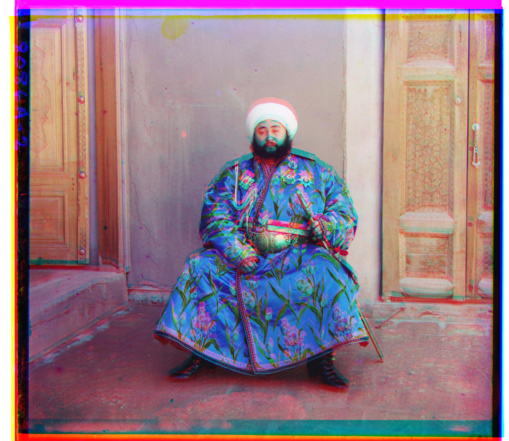
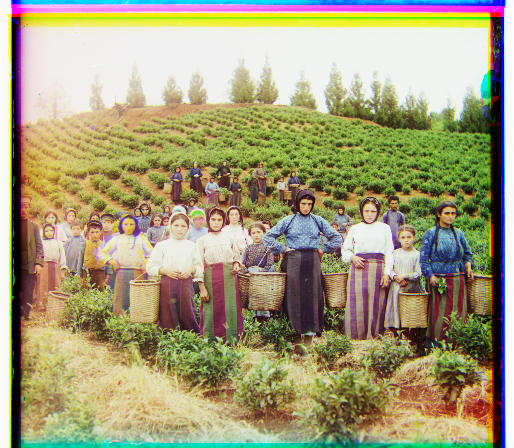
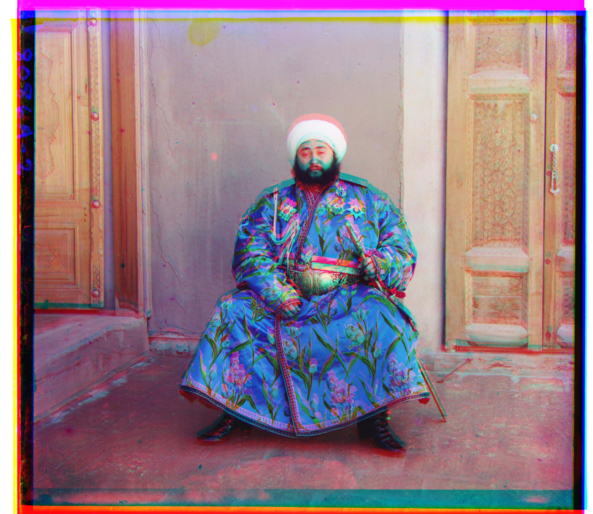
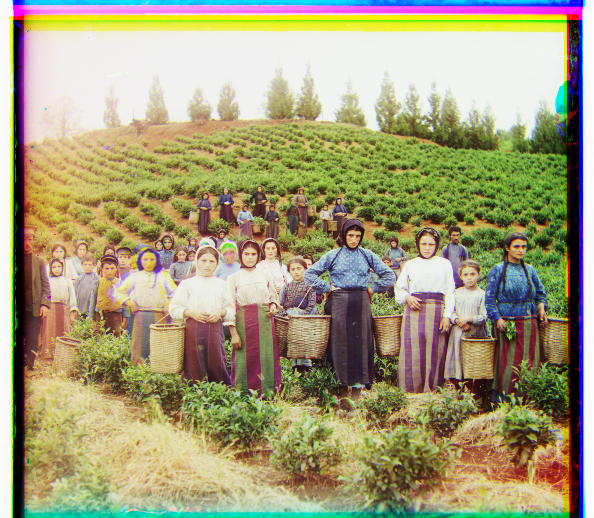
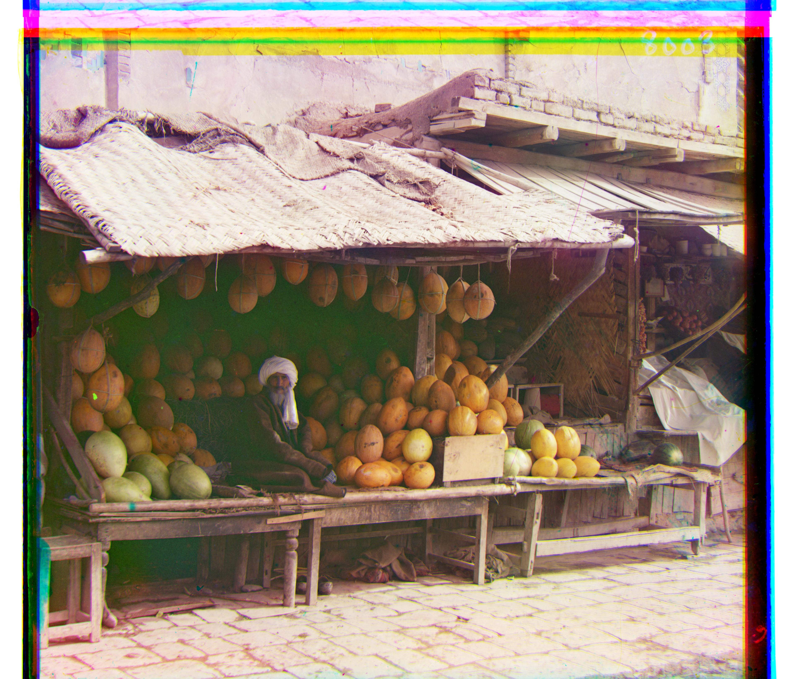
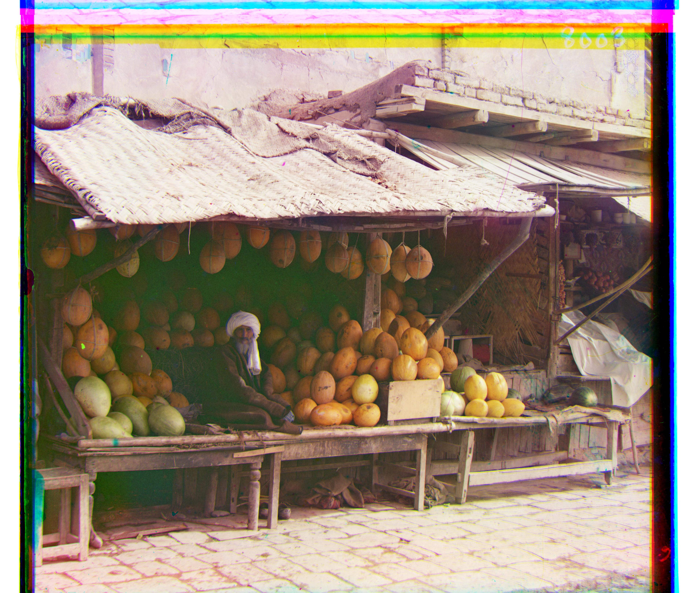
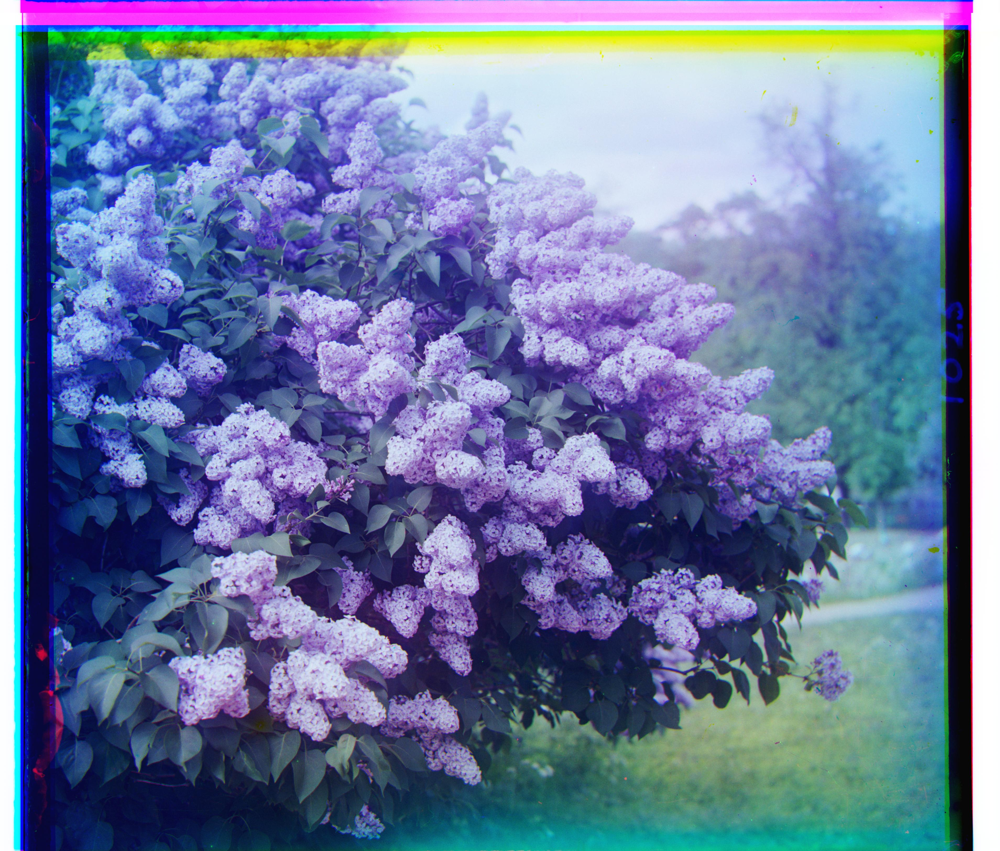
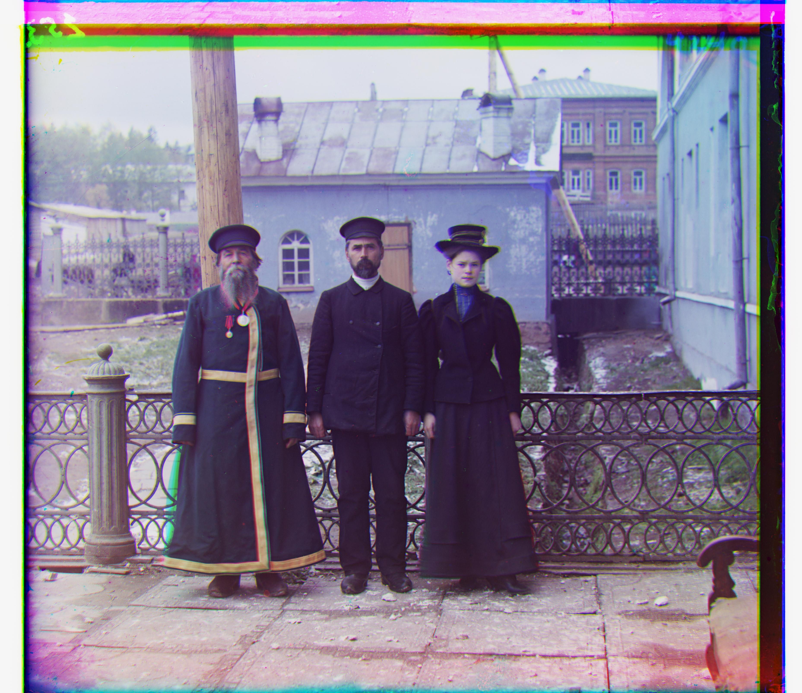
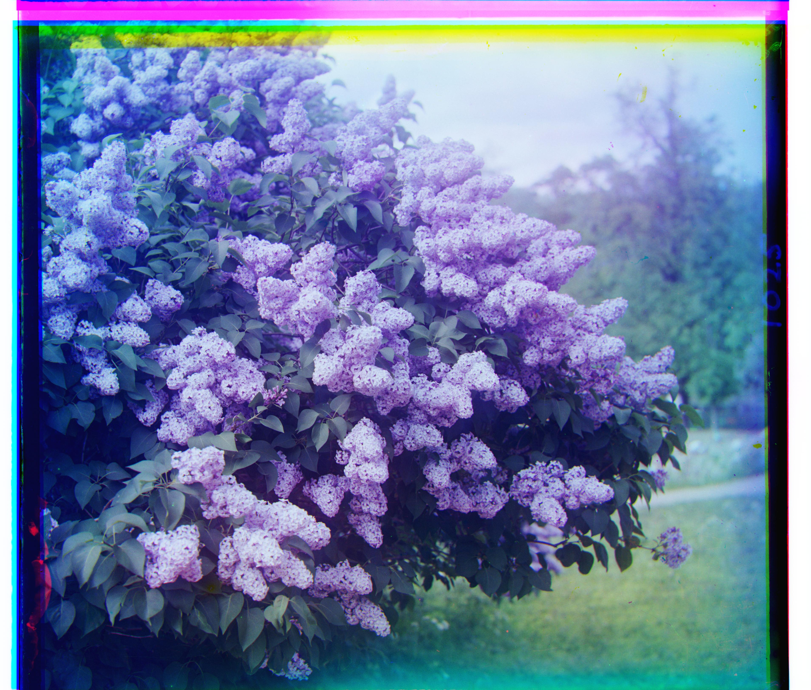
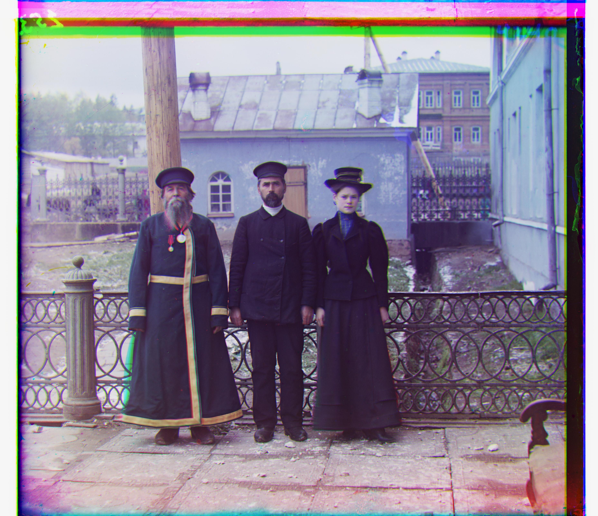

This website showcases the digital reconstruction of Sergei Prokudin-Gorskii's pioneering color photography from the early 1900s. Using advanced image processing algorithms, the project automatically aligns and combines the three separate color channel exposures (blue, green, red) captured on glass plate negatives to produce stunning full-color images of the Russian Empire. The implementation features a multi-scale approach: starting with exhaustive displacement search over small windows for basic alignment, then employing coarse-to-fine image pyramid techniques to efficiently process high-resolution digitized plates. Through careful channel registration using metrics like normalized cross-correlation, these century-old negatives are transformed into vibrant color photographs, bringing Prokudin-Gorskii's visionary documentation of Imperial Russia to life.
My single-scale implementation starts by splitting each glass plate image into three equal parts for the blue, green, and red channels. I use the blue channel as my reference and align the green and red channels to it. The algorithm does a brute force search over all possible displacements in a [-15, 15] pixel window, trying every combination of x and y shifts. For each displacement, I use numpy's roll function to shift the channel, then crop 20 pixels from the borders to avoid edge effects. I score each alignment using Normalized Cross-Correlation (NCC), which works well because it handles the brightness differences between color channels. The displacement with the highest NCC score gives me the best alignment. This approach works great for the smaller test images like cathedral.jpg and monastery.jpg, though it gets slow for larger files.


For the high-resolution .tif files, I needed something faster than exhaustive search. My pyramid approach works recursively - if the image is smaller than 400 pixels, it just uses the single-scale method. Otherwise, it downsamples the image by half, finds the best alignment at that smaller scale, then scales the result back up by 2x. Since upscaling isn't perfect, I do a refinement search in a small [-2, 2] window around the scaled displacement. I also use more aggressive cropping (20% of image size) to focus on the reliable center region. This process repeats until I reach full resolution. The pyramid method is much faster because I'm doing most of the work on smaller images, and the refinement steps help me catch fine details. It works well on most of the test images, though some tricky ones like the Emir still give me trouble due to the different brightness levels between channels.


 





 

 



The Emir of Bukhara image had completely different brightness levels. Since the original photographer used different colored filters, what shows up bright in one channel might be really dark in another. My algorithm relies on finding similar patterns between channels, but when they're this different, there's nothing reliable to match on. I could probably fix this with fancier techniques like edge detection instead of just comparing raw pixels.